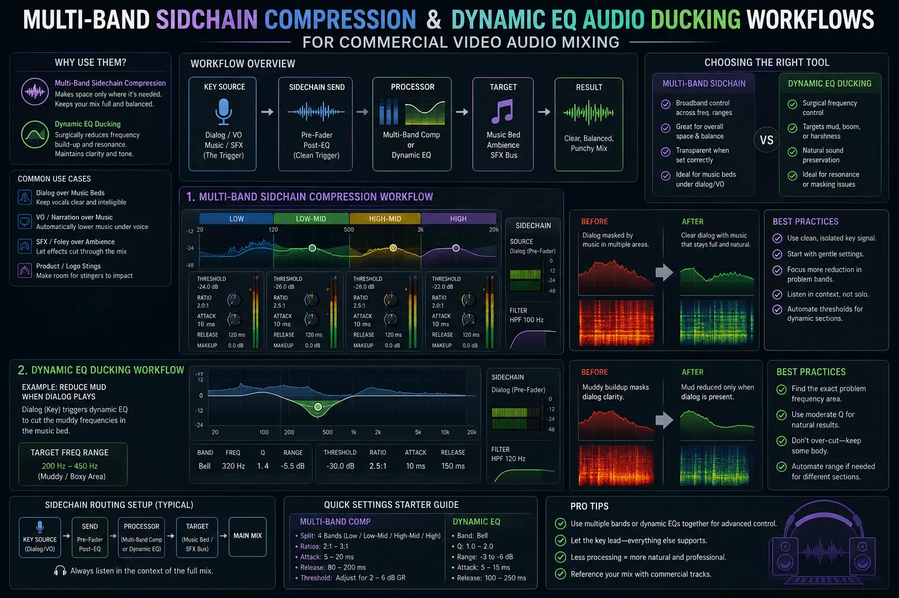
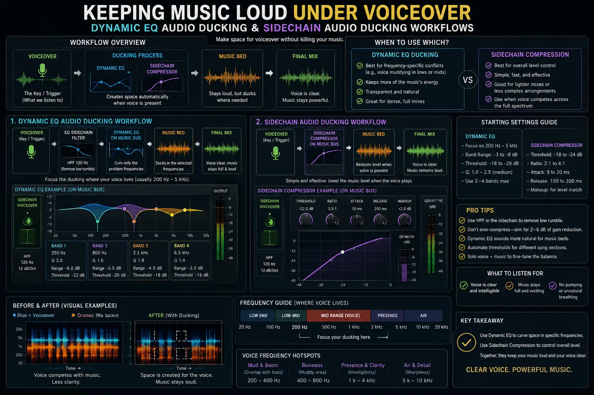

Setting Up Multi-Band Sidechain Compression for Commercial Music Beds
The Sonic Challenge: Preserving Energy While Guaranteeing Intelligibility
In high-impact commercial video production, few elements are as critical—or as tricky to balance—as the relationship between the voiceover narration and the underlying music bed. A commercial's soundtrack drives emotional momentum, establishes brand tone, and keeps scrollers engaged. However, the moment a voiceover enters, those same driving guitars, heavy synth basslines, or complex orchestral arrangements can quickly turn into sonic clutter, masking key vocal frequencies and rendering speech muffled or unintelligible.
Historically, video editors resorted to static volume keyframing or crude broadband ducking to force the music down whenever talent spoke. While this approach creates space for the voice, it also drains the energy from the video. The music collapses into a thin, distant background whisper, creating an unnatural "pumping" volume artifact that signals amateur post-production.
Modern audio engineering solves this dilemma through Sidechain compression for video dialogue, advanced Sidechain Audio Ducking Workflows, precise Multi-Band Dialogue Frequency Isolation, and real-time dynamic EQ audio ducking. By targeting only the specific frequency bands where human speech competes with the music track, video creators can achieve flawless vocal clarity while keeping music loud under voiceover during high-converting promotional ads and Product Sound Design Videography projects.
Broadband Ducking vs. Multi-Band Sidechaining: The Physics of Acoustic Masking
To understand why multi-band sidechain compression is essential for professional commercial video audio mixing, we must first look at psychoacoustics and the phenomenon known as acoustic masking.
Acoustic masking occurs when a loud sound prevents a quieter sound of a similar frequency from being heard by the human ear. Human speech fundamentally resides between 85 Hz and 250 Hz for fundamental pitch, but its critical intelligibility zone—containing consonants such as 't', 'k', 's', 'p', and 'f'—spans between 1 kHz and 4 kHz. Unfortunately, 1 kHz to 4 kHz is also where commercial music tracks pack their richest harmonic energy: snare drum snaps, lead synth melodies, electric guitar bite, and vocal chops.
When you apply standard broadband ducking, a compressor monitors the voiceover signal and attenuates the entire music bed across all frequencies (from 20 Hz sub-bass to 20 kHz air). This causes several severe issues:
- Loss of Low-End Impact: The kick drum and bass line—which reside around 40 Hz to 120 Hz and do not clash with vocal clarity—are pulled down significantly, causing the beat to lose its driving pulse during narrative moments.
- Distracting Volume Pumping: Because the total mix gain drops abruptly whenever a syllable is spoken, the audience consciously perceives the music dipping up and down, pulling focus away from the visual story.
- Spectral Dullness: Dropping top-end sparkle (6 kHz to 12 kHz) robs the soundtrack of its high-fidelity sheen and spatial depth.
In contrast, Multi-Band Dialogue Frequency Isolation splits the music signal into independent frequency bands (e.g., Low: 20–250 Hz, Mid: 250 Hz–1 kHz, Upper-Mid: 1–4 kHz, High: 4–20 kHz). By routing the dialogue track into the sidechain key input of only the Upper-Mid band, the compressor ducks only the 1 kHz to 4 kHz range when the voiceover speaks. The sub-bass remains thunderous, the high hat remains crisp, and the music retains maximum perceptual loudness.
Surgical Vocal Clarity
Ducks only the 1kHz–4kHz midrange frequencies on the music bed where vocal consonants live, ensuring every word of the voiceover is crisp and effortless to comprehend.
Preserved Music Energy
Keeps the sub-bass, kick drum, and high-frequency sparkle at 100% volume, maintaining high emotional momentum throughout the commercial spot.
Zero Volume Pumping
Replaces distracting broadband volume dips with transparent frequency carving, eliminating unnatural audio pumping across fast dialogue cadence.
Broadcast Loudness Stability
Maintains consistent integrated loudness levels (-14 LUFS for digital ad platforms or -24 LKFS for TV broadcast) without sacrificing dynamic mix punch.

Premiere Pro Auto-Ducking vs. Dedicated Sidechain Compression Workflows
A common question among video editors and content creators concerns Premiere Pro auto-ducking vs sidechain mixing techniques. Adobe Premiere Pro offers an Essential Sound Panel feature called "Auto-Ducking," which automatically generates volume keyframes on music tracks whenever dialogue clips are detected.
While Premiere Pro auto-ducking is convenient for quick video assemblies, social vlog cuts, or fast turnaround corporate web videos, it has significant technical limitations when applied to high-stakes commercial commercials:
- Clip-Based Keyframing Latency: Essential Sound Auto-Ducking relies on clip boundary detection. If a voiceover artist pauses mid-sentence for breath or emphasis, keyframed ducking creates rapid, mechanical volume dips and spikes that feel rigid and unmusical.
- Broadband Gain Attenuation: Auto-ducking keyframes lower the overall fader volume of the track, suffering from all the broadband ducking flaws outlined above—sucking out bass power and top-end brilliance.
- Lack of Real-Time Acoustic Feedback: Keyframes are static graphics drawn on the timeline. If you alter vocal EQ, clip timing, or voiceover gain staging downstream, the keyframes become misaligned and must be re-analyzed manually.
Manual Sidechain Audio Ducking Workflows using multi-band compressors or dynamic EQs (such as FabFilter Pro-MB, Waves C6, iZotope Neutron, or native NLE audio tools in DaVinci Resolve Fairlight and Premiere Audio Track Mixer) operate in real-time. The compressor reacts instantly to actual acoustic amplitude envelopes rather than clip boxes, providing silky-smooth attenuation that expands and contracts naturally with speech cadence.
Step-by-Step Production Guide: Setting Up Multi-Band Sidechain Ducking
Here is the exact step-by-step engineering framework used in professional commercial video audio mixing to configure Sidechain compression for video dialogue:
Step 1: Prep and Clean the Dialogue Bus
Before sending your voiceover signal to trigger sidechain compressors, clean and process the dialogue track. Apply a high-pass filter at 80 Hz to eliminate low-end rumble, perform surgical notch EQ to remove boxy room resonances (around 300–500 Hz), use a de-esser to catch harsh sibilance, and pass the signal through a smooth dialogue leveller or peak limiter. Group all voiceover clips into a clean "Dialogue Bus."
Step 2: Assign the Dialogue Bus as a Sidechain Send
In your NLE or DAW (Premiere Pro Audio Track Mixer, DaVinci Resolve Fairlight, Apple Logic Pro, or Avid Pro Tools), set an auxiliary send on the Dialogue Bus. Direct this send to an unassigned internal bus (e.g., Bus 3/4 or Sidechain Bus 1). This sends a clean duplicate of the vocal audio to act as the key trigger without altering the main dialogue output fader.
Step 3: Insert a Multi-Band Compressor on the Music Track
Place a multi-band dynamics plugin on your music master track or music stem. Divide the music track into three or four bands:
- Low Band (20 Hz – 250 Hz): Set to internal/bypass (no sidechain compression).
- Mid Band (250 Hz – 1 kHz): Set to mild internal compression or bypass.
- Upper-Mid Band (1 kHz – 3.5 kHz): Enable External Sidechain Mode (Key Input) and set the trigger input to Bus 3/4 (Dialogue Bus).
- High Band (3.5 kHz – 20 kHz): Set to internal/bypass.
Step 4: Dial in Compression Parameters for Natural Speech Integration
Adjust the controls on the Upper-Mid band to achieve transparent ducking:
- Attack Time (10 ms – 20 ms): A fast attack ensures the music band dips immediately at the onset of the first spoken consonant, preventing transient vocal masking.
- Release Time (150 ms – 300 ms): A moderate release time allows the music band to recover smoothly between spoken phrases without audible pumping.
- Compression Ratio (2:1 to 4:1): Use a soft-knee ratio for gentle, transparent gain reduction rather than hard brickwall limiting.
- Gain Reduction / Threshold: Adjust the threshold until you achieve approximately -3 dB to -6 dB of gain reduction on the 1 kHz–3.5 kHz band during active voiceover passages.
Adobe Premiere Pro Setup
- Open Audio Track Mixer window.
- Insert VST3 Multi-Band Compressor on Music Track.
- Set Dialogue Track Send to Submix Bus 1.
- Enable Sidechain Keying (Bus 1) in VST plugin header.
- Isolate 1kHz–3.5kHz band for external trigger.
DaVinci Resolve Fairlight Setup
- Open Fairlight Mixer panel.
- Set Track Send on Voiceover Track to Sidechain Bus.
- Enable Track Dynamics Sidechain on Music Track.
- Select Midrange Band on Fairlight Multi-Band EQ/Comp.
- Tune Threshold for -4dB transparent gain reduction.
DAW Pro-MB & Dynamic EQ Workflow
- Insert FabFilter Pro-MB on Music Stem.
- Create band at 1.2 kHz – 3.8 kHz.
- Toggle Expert Mode -> Trigger -> Free / Ext Sidechain.
- Assign Voiceover Bus to Plugin Sidechain Input.
- Fine-tune Dynamic EQ range slider to -4.5 dB.

Integrating Dynamic EQ Audio Ducking for Surgical Precision
While multi-band compression applies gain reduction across a static frequency band, dynamic EQ audio ducking takes precision one step further. Dynamic EQ plugins (such as FabFilter Pro-Q 3, iZotope Pro Audio, or Waves F6) allow EQ bell curves to expand or contract dynamically based on sidechain input signal strength.
Instead of pulling down a broad 1 kHz to 4 kHz range, dynamic EQ can track the specific resonant fundamental and formants of a specific voiceover actor. For example, a deep male voiceover might require ducking around 1.2 kHz and 2.5 kHz, whereas a bright female voiceover might require ducking at 2.8 kHz and 4 kHz.
By deploying dynamic EQ sidechaining, a narrow bell filter notch (Q of 1.5 to 2.0) automatically dips by -4 dB only when those specific frequencies are energized in the voiceover. The surrounding instrument frequencies remain untouched, delivering an ultra-clean acoustic pocket while keeping music loud under voiceover.
Commercial Video Audio Mixing & Product Sound Design Videography
In high-end commercial spots—such as automotive commercials, luxury wristwatches, tech gadgets, or cosmetic product launches—sound mixing extends beyond dialogue and music beds to incorporate Product Sound Design Videography.
Product sound design includes tactile foley (button clicks, metallic latches, glass clinks, liquid pours), risers, sub-drops, and impact swooshes. When mixing these sound effects alongside voiceover and music beds, sidechain ducking can be expanded into multi-bus hierarchies:
- Dialogue Bus (Primary Priority): Sidechains the Music Bed (upper-mid ducking) and sidechains the Foley/SFX Bed by -2 dB to -4 dB to ensure voiceover remains supreme.
- Product SFX Bus (Secondary Priority): Key-sidechains the Music Bed sub-bass during heavy impact moments (e.g., a car door shut or product snap), briefly dipping 50 Hz on the music track for 50 milliseconds so the physical product sound hits with maximum tactile weight.
- Music Master Bus: Plays at full volume during non-dialogue sequence windows, automatically swelling back up to cinematic loudness the instant dialogue pauses.
Mastering to Commercial Broadcast & Digital Loudness Standards
Once your multi-band sidechain compression and dynamic EQ ducking are configured, the final phase of commercial video audio mixing is master loudness compliance.
Different delivery channels enforce strict integrated loudness targets:
- Television Broadcast Standards (ATSC A/85 / EBU R128): Target -24 LKFS / LUFS integrated (+/- 1 LU tolerance) with a maximum True Peak limit of -2.0 dBTP.
- Web & Social Platforms (YouTube, Instagram, Meta Ads, TikTok): Target -14 LUFS integrated with a maximum True Peak limit of -1.0 dBTP.
Because multi-band sidechain compression eliminates overall track volume drops, your integrated loudness remains stable across the entire spot. You avoid master limiter pumping and guarantee that your commercial plays at full competitive loudness when streamed on mobile devices, laptops, or broadcast television networks.
Conclusion
Mastering Sidechain compression for video dialogue, Sidechain Audio Ducking Workflows, Multi-Band Dialogue Frequency Isolation, and dynamic EQ audio ducking represents the bridge between amateur video editing and broadcast-grade post-production.
By moving away from basic volume keyframing and evaluating Premiere Pro auto-ducking vs sidechain mixing, commercial directors and audio engineers can achieve crystal-clear voiceover intelligibility while keeping music loud under voiceover. Whether you are producing high-ticket Product Sound Design Videography or national ad campaigns, multi-band sidechaining keeps your soundtrack punchy, energetic, and fully compliant with global broadcast standards.
At The PhD Ads in Madurai, our team specializes in high-impact commercial video audio mixing, custom sound design, and broadcast audio engineering tailored to help brands command attention on every screen.
Key Topics
Ready to Master Multi-Band Sidechain Audio Ducking for Commercial Ads?
At The PhD Ads in Madurai, we specialize in high-converting commercial video production, advanced audio ducking workflows, dynamic EQ mixing, and product sound design built to elevate your brand's video impact across all digital and broadcast platforms.
Email: team@e2o.in